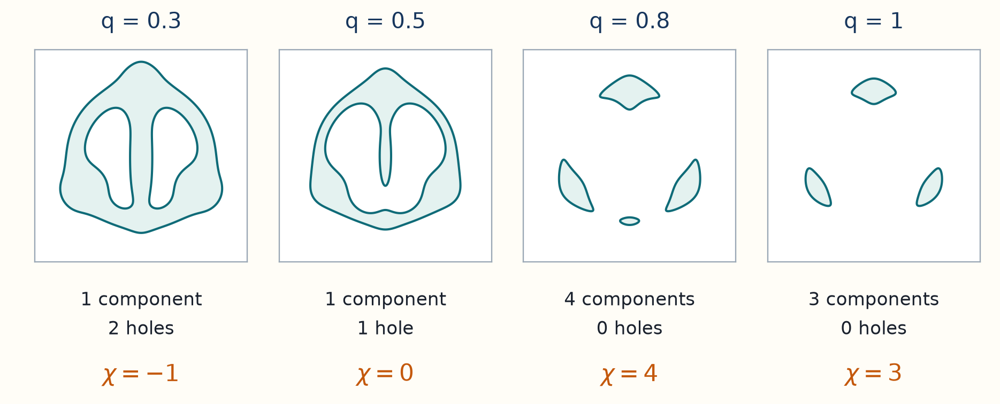
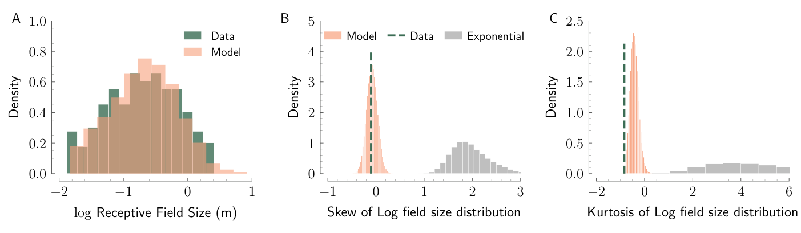
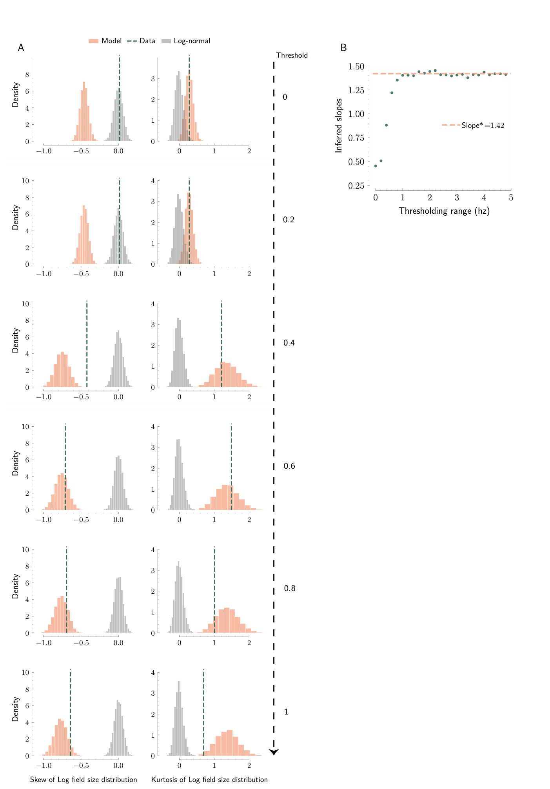
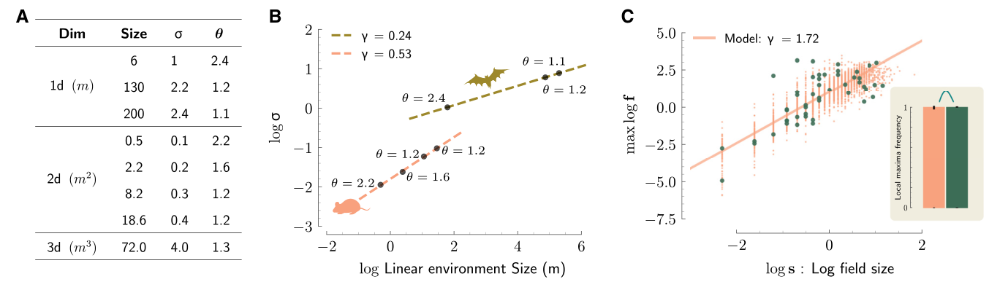
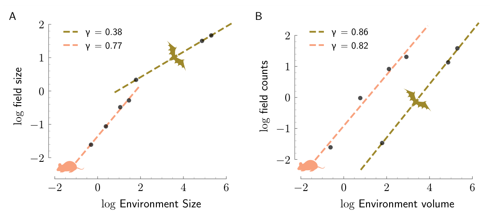
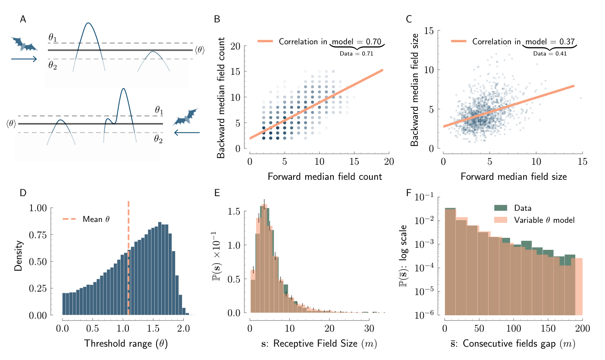

12 Holes and measurements test the spatial explanation
Recordings show where a hippocampal cell is active as an animal moves through an environment. This chapter tests the spatial model against the shapes and arrangement of those regions, then asks what agreement can reveal about the inputs and connections that produce them.
Two maps can have the same field sizes and counts while arranging their active regions differently. One may contain rings or tunnels that the other lacks. Can the Gaussian spatial model account for these differences, and how much would that agreement tell us about the circuit that produced the maps?
We first count connected regions and holes together, which gives a prediction across activity thresholds. The boundary of the observed environment matters for this calculation, so we keep its contributions. We then examine which measured quantities set the model’s parameters and which provide further tests. Finally, a sum of many randomly weighted inputs shows one way a circuit could produce Gaussian spatial input, while making clear which assumptions and circuit measurements that explanation still needs.
The input map varies with position but remains fixed in time in this model. As before, \(q\) is the threshold applied to normalized input, \(\sigma\) is the local spatial scale, and \(a\) converts normalized input above threshold into firing rate. The number of spatial dimensions is \(d\). It is separate from the diffusion coefficient \(D\) used in the memory chapters.
12.1 Holes distinguish maps with the same field count
Two maps can have the same field count and total active area but different holes. As the input threshold \(q\) rises, active regions shrink and can split or disappear. The numbers of components and holes can change.
The Euler characteristic, written \(\chi\) and unrelated to the common variance fraction \(\chi\) in the eye chapter, combines these counts differently in each dimension:
- In 1D it equals the number of connected active intervals.
- In 2D it is the number of connected components minus the number of independent holes. Three disjoint disks have \(\chi=3\). One connected ring has \(\chi=1-1=0\).
- In 3D it is components minus independent tunnels plus enclosed cavities. A solid ball has \(\chi=1\), a solid ring has \(\chi=0\), and a hollow spherical shell has \(\chi=2\).
These counts are the first three Betti numbers: numbers of independent components, loops, and cavities, respectively.1
For a smooth, stationary, isotropic Gaussian input on a closed interval, square, or cube of side length \(L\), the paper predicts the mean Euler characteristic (Eqs. 8–10). Let \(r=L/\sigma\) and \(Q(q)=\Pr(Z>q)\) for a standard normal variable \(Z\). Then
\[ \begin{aligned} \mathbb E[\chi_1]&=Q(q)+\frac{r}{2\pi}e^{-q^2/2},\\ \mathbb E[\chi_2]&=Q(q)+\left[\frac{2r}{2\pi}+\frac{r^2q}{(2\pi)^{3/2}}\right]e^{-q^2/2},\\ \mathbb E[\chi_3]&=Q(q)+\left[\frac{3r}{2\pi}+\frac{3r^2q}{(2\pi)^{3/2}}+\frac{r^3(q^2-1)}{(2\pi)^2}\right]e^{-q^2/2}. \end{aligned} \]
The subscript gives the spatial dimension, \(q\) is the normalized input threshold, and \(\sigma\) is the local spatial scale. The terms involving powers of \(r\) include interior and boundary contributions. These formulas predict the mean signed topology, not necessarily the number of fields when holes or tunnels are present. The calculation below explains their terms.
The expected Euler characteristic has an exact Gaussian formula even where identifying it with field count would be wrong. We already derived the 1D case. To understand the higher dimensional factors, we use a mathematical result. A critical point is a location where the gradient is zero. For a smooth function on a compact domain with invertible Hessians at its critical points and suitable boundary conditions, Morse theory expresses the Euler characteristic as a signed count of critical points, including boundary contributions. We do not prove that topological theorem here. The calculation below shows how its Gaussian expectation produces the paper’s polynomials and boundary terms. The general Gaussian result is given by Taylor’s kinematic formula.2
The signs have a geometric meaning. In 2D, lowering the threshold through a maximum creates an active component, adding one to \(\chi\). Passing a saddle joins two components or opens a hole, subtracting one. Passing a minimum fills a hole, adding one. As in the peak and saddle example, the Hessian has two negative eigenvalues at a maximum, opposite signs at a saddle, and two positive eigenvalues at a minimum. The determinant is the product of the eigenvalues; for a two-dimensional Hessian, \(\det(-H)\) is the product of their negatives. It therefore has the required signs \(+,-,+\). These signs require nonzero eigenvalues; a flat critical direction needs a different analysis. The boundary terms account for changes at the edge of the observed region.
First take the interior of a \(j\) dimensional region, with \(j\le3\), and set \(\lambda=\sigma^{-2}\). Here \(z\) is the unit-variance input map, \(H\) is its Hessian of second spatial derivatives, and \(\nabla z\) is its gradient. A critical point has gradient zero. The multidimensional Kac–Rice rule counts these zeros with the absolute Hessian determinant. The Morse signs replace that absolute determinant by \(\det(-H)\). The resulting signed density above level \(q\) is
\[ \eta_j(q)=p_{\nabla z}(0) \int_q^\infty \mathbb E[\det(-H)\mid z=b,\nabla z=0]\,\phi(b)\,db, \]
Here \(\eta_j(q)\) is the expected signed critical-point count per unit \(j\)-dimensional volume above threshold \(q\), \(b\) is a possible input height in the integral, and \(p_{\nabla z}(0)\) is the gradient density at zero. The standard-normal height density is \(\phi(b)=e^{-b^2/2}/\sqrt{2\pi}\). The gradient’s \(j\) components are independent Gaussians of variance \(\lambda\), so \(p_{\nabla z}(0)=(2\pi\lambda)^{-j/2}\). The determinant measures how spatial volume near a gradient zero converts to gradient volume, just as the slope did for a scalar crossing.
The resulting signed densities are
\[ \eta_1=\frac{e^{-q^2/2}}{2\pi\sigma},\qquad \eta_2=\frac{q e^{-q^2/2}}{(2\pi)^{3/2}\sigma^2},\qquad \eta_3=\frac{(q^2-1)e^{-q^2/2}}{(2\pi)^2\sigma^3}. \]
These are signed densities per length, area, and volume, not three formulas for positive field counts.
[Derivation: the Gaussian determinant average] Write the conditional Hessian as \(H=-b\lambda I+G\), where \(G\) has zero mean. Differentiating an isotropic covariance four times gives, for distinct indices \(i,k\),
\[ \mathbb E[G_{ii}G_{kk}]=\kappa-\lambda^2, \qquad \mathbb E[G_{ik}^2]=\kappa. \]
The constant \(\kappa\) describes a fourth derivative of covariance. Conditioning on height subtracts \(\lambda^2\) from the covariance of the two diagonal entries, but not from the off-diagonal variance. Hence each pair contributes
\[ \mathbb E[G_{ii}G_{kk}-G_{ik}^2]=-\lambda^2. \]
For \(j=1\), \(\mathbb E[\det(-H)\mid b]=b\lambda\). For \(j=2\), expand the two by two determinant to obtain \(\lambda^2(b^2-1)\). For \(j=3\), the leading term is \(b^3\lambda^3\). The three index pairs each contribute \(-b\lambda^3\), and all odd centered Gaussian products vanish. The result is \(\lambda^3(b^3-3b)\). The unknown fourth derivative \(\kappa\) has canceled.
Integrating the three polynomials gives
\[ \begin{aligned} \int_q^\infty b\phi(b)\,db&=\phi(q),\\ \int_q^\infty(b^2-1)\phi(b)\,db&=q\phi(q),\\ \int_q^\infty(b^3-3b)\phi(b)\,db&=(q^2-1)\phi(q). \end{aligned} \]
For example, differentiate \(-q\phi(q)\) to get \((q^2-1)\phi(q)\), which verifies the second integral using its vanishing upper endpoint. Combining the determinant, gradient density, and integral gives the signed densities above.
Now include the boundary of an ordinary closed square or cube of side \(L\), whose opposite faces are not joined and with every intersecting component retained. On a \(j\) dimensional face, derivatives along the face give the same calculation as above. Each of its \(d-j\) gradient components perpendicular to the face and directed out of the box must have the appropriate sign to contribute to the boundary Morse count. Symmetry and independence give a factor \(2^{-(d-j)}\). There are \(2^{d-j}\binom dj\) such faces, each of size \(L^j\). Their combined coefficient is therefore \(\binom djL^j\). Corners supply \(Q(q)\) in total, where \(Q(q)=\Pr(Z>q)\) for a standard normal variable \(Z\), as in the one-dimensional crossing calculation. With \(r=L/\sigma\), the formulas become
\[ \begin{aligned} \mathbb E[\chi_1]&=Q(q)+\frac{r}{2\pi}e^{-q^2/2},\\ \mathbb E[\chi_2]&=Q(q)+ \left[\frac{2r}{2\pi}+\frac{r^2q}{(2\pi)^{3/2}}\right]e^{-q^2/2},\\ \mathbb E[\chi_3]&=Q(q)+ \left[\frac{3r}{2\pi}+\frac{3r^2q}{(2\pi)^{3/2}} +\frac{r^3(q^2-1)}{(2\pi)^2}\right]e^{-q^2/2}. \end{aligned} \]
These reproduce the paper’s Equations 8–10 for interval, square, and cube geometry. They are not the formulas for a periodic box. For a rectangle or rectangular room, replace \(2L\) or \(3L\) by the sum of side lengths, \(3L^2\) by the sum of pairwise side products, and \(L^3\) by volume. A general domain requires its own geometric boundary factors. Applying only the volume term to a small room would discard real boundary contributions.
The formulas have two limiting checks:
- As \(q\to-\infty\), the whole box becomes active and all three expectations tend to one.
- As \(q\to+\infty\), they tend to zero.
At intermediate thresholds the higher dimensional signed densities can be negative because tunnels or holes outnumber components. For example a cube with \(L/\sigma=10\) has expected \(\chi=-20.06\) at \(q=0\). A negative expected Euler characteristic is meaningful. A negative expected field count would not be.
Thresholding one fixed smooth map separates the number of connected fields from the number of holes.

A negative chi means that holes outnumber components in this 2D example. It does not mean a negative number of fields. When holes are absent, chi equals the component count.
At a sufficiently high threshold, almost every component is a small solid blob with one peak and no holes. Then \(\chi\simeq N\). For a large box, retaining the leading volume term and the leading power of \(q\) gives
\[ \mathbb E[N]\simeq \frac{V}{(2\pi)^{(d+1)/2}\sigma^d} q^{d-1}e^{-q^2/2}, \]
where \(V\) is environment length, area, or volume. For a large domain with negligible boundary contributions, the pooled field-weighted mean size \(\mu_s\) is the expected total active volume \(VQ(q)\) divided by the expected component count, counting each field once. This ratio is not generally the expected value of the per-map average field size in a finite domain. Use \(Q(q)\simeq e^{-q^2/2}/(\sqrt{2\pi}q)\) for high positive \(q\). The factors \(V\) and \(e^{-q^2/2}\) cancel, leaving \(\mu_s\simeq(\sqrt{2\pi}\sigma/q)^d\). This independently checks the size-law mean. The exact EC formula and this approximate component count have different ranges of validity.3
Read Figure 3F–H as whole curves, rather than single field counts. Increasing the applied firing rate cutoff by \(t\ge0\) changes the normalized level to \(q+t/a\). It can reveal separation between peaks or remove components. The measured maps only test levels at or above their original effective cutoff. The rest of an analytic curve is a prediction. The gain was matched using mean maximum firing rate before the EC comparison, so the horizontal conversion from Hz to normalized level also uses fitted information. Two dimensional holes and three dimensional tunnels help explain the nonmonotonic curves.4
12.2 What was fitted and what was tested
The experiments supply estimated firing rate maps, not the hidden Gaussian input. To assess a prediction, we must therefore track both which summaries set its parameters and which processing decisions change the map’s geometry.
The paper reanalyzes earlier bat and rodent recordings. It uses different available summaries in different conditions. The inspected article and supplement do not clearly give the final included cell count for every analysis, particularly the long-tunnel and 3D reanalyses. Counts from an original recording study should therefore not be silently substituted for those final samples.5
| Condition | Quantities used to choose parameters | Main additional comparisons |
|---|---|---|
| Bats, 200 m tunnel | mean field length and mean gap | full distributions, log-length moments, peaks, boundary slopes, rate versus width, EC |
| Bats, 6 m tunnel | mean field length and occupied fraction | length distribution and simpler field shapes. Figure 5D reports 40 cells. |
| Bats in a 130 m tunnel and rats in a 48 m maze | mean length and mean field count | length distributions and parameter trends. Rat details are in Figure S1. |
| Mice, 40 m virtual track | direct fit of \(\beta\) to available length histograms | qualitative Rayleigh comparison for four mice in Figure 1F |
| Rats, 18.6 m\(^2\) arena | mean area and count, with silent-cell exclusion correction | areas, counts, line slices, and EC. Slice and EC analyses of the raw maps use 20 supplied cells. |
| Bats, 5.8 by 4.6 by 2.7 m room | mean volume and occupied volume fraction | volumes, line/plane slices, rate versus linear size, EC, surface curvature |
The STAR Methods call the virtual-track animals rats in one sentence. Figure 1F and the main results identify them as mice. Several STAR figure cross-references also appear displaced. The table follows the main figure captions and the analyses described in full, rather than those isolated labels.
Figure 1C distinguishes a limiting analytical Rayleigh curve from the finite threshold simulation histogram. Its parameters were constrained by both mean length and mean gap, so the full length histogram is an additional check. Figure 1D does the same for gaps. Panel E tests whether the shape of the log-length distribution agrees with the model beyond its mean and variance.
For \(Y=\log s\), write \(m_k=\mathbb E[(Y-\mathbb EY)^k]\). Skew, \(m_3/m_2^{3/2}\), measures signed asymmetry: the cubed deviations retain their signs, so unusually large log lengths contribute positively and unusually small ones negatively. Excess kurtosis, \(m_4/m_2^2-3\), measures the fourth moment relative to a Gaussian with the same variance. The fourth power weights large departures from the mean strongly, on either side. A positive value means a larger fourth moment than that Gaussian reference. A lognormal distribution of lengths makes \(Y\) Gaussian and both quantities zero. Nonzero population values therefore rule out that lognormal description. Zero values alone do not prove it, and finite sample estimates fluctuate, which is why the figure compares simulated sampling distributions.6
For the long-tunnel data, the authors compared the Gaussian excursion model with a fitted lognormal using likelihoods, the probabilities or densities each model assigns to the observed data, and criteria that penalize fitted parameter count. Those comparisons favored the Gaussian model. These are in-sample model comparisons. They are not reported held-out forecasts. Model histogram error bars come from \(10^4\) simulations matched to the number of recorded cells. They do not quantify every source of animal-level or measurement uncertainty.7
The processing choices affect the quantities being compared:
- Bat maps were rectified at about 0.5 Hz for denoising: rates below this cutoff were set to zero, removing weak activity from the measured fields.
- The 3D maps, sampled in 10 cm bins, also received a median filter, which replaces each bin’s rate with a middle-ranked rate in its local neighborhood. The paper used a neighborhood two bins wide on each axis. This reduces isolated high or low values but can also change small field features.
- Fields larger than three standard deviations above mean 3D volume were removed as possible merges, including from slice analyses.
- Peak counting excluded incomplete boundary fields and used a range of smoothing widths.
- The 1D rate versus width comparison used an additional 1 Hz cutoff.
These decisions can remove small components, alter peaks, and change tails. They belong to the definition of the analyzed fields.8
Figure S1 matches the rat maze’s 15 cm minimum length cutoff in simulations and removes unusually large empirical fields. Changing that cutoff changes log-length moments. Figure S5 shows sensitivity of the higher-moment comparison across small denoising thresholds, while the rate versus width slope becomes stable above about 1 Hz. Figure S2 compares the spherical-field alternative and measures boundary curvature. Locally, mean curvature averages bending in two principal directions and Gaussian curvature multiplies them: a spherical patch bends the same way in both directions, while a saddle bends in opposite directions. These are extra shape measurements. They are not needed to derive the field-size law. Surface representations and finite differences affect their estimates.9
Original paper figure: Mainali, Azeredo da Silveira, and Burak (2025), Figure S1


Original paper figure: Mainali, Azeredo da Silveira, and Burak (2025), Figure S5


Figure 4A–B summarizes fitted parameter changes across a small set of environments. The correlation length increases with environment size while the threshold generally decreases. At fixed \(q\), increasing \(\sigma\) reduces crossings per metre. At fixed \(\sigma\), the crossing density is proportional to \(e^{-q^2/2}\): lowering a positive \(q\) toward zero increases it, while lowering a negative \(q\) decreases it. Both parameters also affect mean length, so these effects must be considered together. Figure S3 reports count scaling exponents below one and hence a weak decline in count per unit environment size. These cross-experiment trends do not establish a biological scaling law. In particular, the 3D table’s reported \(\sigma=4.0\) has an unclear distance-unit conversion relative to the spatial binning, so it should not be read as a verified value in metres.10
Original paper figure: Mainali, Azeredo da Silveira, and Burak (2025), Figure 4


Original paper figure: Mainali, Azeredo da Silveira, and Burak (2025), Figure S3


The model also allows differences between cells. Figure S4 draws a positive threshold separately for each cell and keeps that threshold for two otherwise independent maps representing opposite flight directions. Low-threshold cells tend to have more and larger fields in both maps. This shared cell property creates correlations between flight directions even when field locations differ between directions. Two distribution parameters were chosen to match the two empirical correlations, so those correlations are fitted features of this extension. Its continued agreement with length and gap distributions is the additional comparison. This extension should not be described as a two-parameter model shared by all cells.11
Original paper figure: Mainali, Azeredo da Silveira, and Burak (2025), Figure S4


12.3 Random input weights can generate Gaussian maps
The statistical model becomes biologically useful if it suggests how a circuit could make the maps. A random weighted sum of many inputs is one possible mechanism, and the supplement makes its assumptions explicit.
At position \(x\), each input cell contributes according to its spatial firing profile. Fixed connection weights determine how those contributions combine at the receiving cell. The source treats the sum as effective input relative to a background that can be balanced through inhibition or regulation of excitation and inhibition. The signed random weights below are part of this simplified input model. They do not establish the signs of individual biological synapses.
Let \(u_i(x)\) be the fixed spatial tuning of input neuron \(i\), and let independent weights \(W_i\) have zero mean and variance \(v_W\). The profiles \(u_i\) may have nonzero spatial means. The expectation below is over weights: their zero means make the summed input \(h(x)\) have mean zero. The summed input is
\[ h(x)=\sum_{i=1}^n W_i u_i(x). \]
At a finite list of positions this is a sum of independent random vectors, one per input cell. Under a multivariate central limit condition, with a suitable normalization and no single input dominating, the sum approaches a Gaussian vector as the number of contributing inputs grows. Applying this at every finite list supplies the Gaussian-process description. This Gaussian limit requires many contributing inputs at each position. A large anatomical input count alone does not establish how many inputs contribute there.12
The covariance calculation exposes which assumption supplies spatial structure:
\[ \begin{aligned} \mathbb E[h(x)h(y)] &=\sum_{i,j}\mathbb E[W_iW_j]u_i(x)u_j(y)\\ &=v_W\sum_i u_i(x)u_i(y). \end{aligned} \]
The same fixed weight multiplies an input cell’s activity at both positions. For positive input profiles, cells active at both \(x\) and \(y\) therefore make positive contributions to covariance across possible weight choices. Little overlap gives a smaller contribution. For profiles defined as deviations from background, the products can also be negative. Broad input profiles can produce broad spatial covariance, as the Gaussian example below shows.
If inputs are translated copies \(u_i(x)=u_0(x-x_i)\) with centres densely and uniformly covering space at density \(\rho\), the sum is approximately
\[ C(y-x)\simeq v_W\rho\int u_0(s)u_0(s+y-x)\,ds. \]
The assumptions supply different parts of the model:
- Uniform coverage supplies stationarity away from boundaries.
- Smooth input tuning supplies smoothness.
- Random weights supply the Gaussian limit under their independence and size conditions.
For input profiles with different shapes, average the last integral over the distribution of those shapes, as in Methods S2, Equation S8.
At fixed profile shape, increasing the weight variance \(v_W\) or input density \(\rho\) increases the covariance amplitude. It does not change the normalized spatial dependence in this construction. Widening each input profile broadens the distances over which positions share input. It can also change the covariance amplitude and hence the normalized threshold \(q\) when the absolute threshold is fixed. To isolate an effect of spatial scale at fixed \(q\), the input amplitude or absolute threshold must be adjusted accordingly.
For example, take \(u_0(s)=R_0e^{-s^2/(2b^2)}\) in one dimension, where \(s\) is distance from an input cell’s centre, \(R_0\) is its peak firing rate, \(b>0\) is the profile width, and \(\Delta=y-x\) is the separation between the two positions whose input covariance is being calculated. To develop the covariance integral, first complete the square: \([s^2+(s+\Delta)^2]/(2b^2)=(s+\Delta/2)^2/b^2+\Delta^2/(4b^2)\). The shifted Gaussian integrates to \(\sqrt\pi b\), giving
\[ \int u_0(s)u_0(s+\Delta)\,ds =R_0^2\sqrt\pi b\,e^{-\Delta^2/(4b^2)}. \]
The covariance has Gaussian width parameter \(\sqrt2 b\). Its second derivative at zero gives the same correlation length, \(\sigma=\sqrt{-C(0)/C''(0)}=\sqrt2 b\). Thus widening the input profile increases the correlation length in proportion to \(b\) in this ideal construction. The square of the Gaussian width doubles relative to \(b^2\), which is consistent with the supplement’s description of twice the width if that description uses the squared width. This comparison describes the input covariance; field sizes also depend on the threshold and need not change by the same factor.13
Agreement with the Gaussian field predictions supports this random-summation account as a possible explanation. It does not uniquely recover synaptic weights from rate maps. Correlated inputs, a structured component added to many random contributions, plasticity, or recurrent processing could also produce approximately Gaussian spatial input under some conditions. The paper measures rate maps, rather than the relevant weights or subthreshold input directly. Its analyzed environments were familiar and fairly uniform. Stationarity may fail near landmarks, boundaries, rewards, or in changing tasks.14
Thresholding a smooth spatial Gaussian input predicts field arrangement, shape, and topology from a small set of parameters. Several comparisons with recordings support these predictions. Inferring a circuit mechanism from this agreement requires additional measurements or perturbations.
Mainali et al. (2025), Universal statistics of hippocampal place fields across species and dimensionalities, Neuron, 113, 1110–1120.e3, doi:10.1016/j.neuron.2025.01.017, Figure 3F–H; STAR Methods, “Euler characteristics,” Equations 8–10, p. e3. ↩︎
Taylor, J. E. (2006). A Gaussian kinematic formula. The Annals of Probability, 34(1), 122–158. DOI; author preprint, Equation 1.4, Theorem 4.1, Section 5.1 and Equation 5.1. This chapter uses the signed critical-point and boundary-counting framework, then derives the Gaussian algebra for dimensions at most three and the face factors for a box, matching Mainali et al.’s Equations 8–10. It does not prove the underlying Morse or kinematic theorem. ↩︎
Mainali et al. (2025), Universal statistics of hippocampal place fields across species and dimensionalities, Neuron, 113, 1110–1120.e3, doi:10.1016/j.neuron.2025.01.017, Supplemental Methods S3, Equations S16–S17, p. 12. These are high threshold, volume-dominated approximations. ↩︎
Mainali et al. (2025), Universal statistics of hippocampal place fields across species and dimensionalities, Neuron, 113, 1110–1120.e3, doi:10.1016/j.neuron.2025.01.017, Figure 3F–H; STAR Methods, “Euler characteristics,” Equations 8–10, p. e3. ↩︎
Mainali et al. (2025), Universal statistics of hippocampal place fields across species and dimensionalities, Neuron, 113, 1110–1120.e3, doi:10.1016/j.neuron.2025.01.017, STAR Methods, “Data processing,” “Parameter inference,” “Fields in 3D,” “Number of local peaks within a field,” and “Maximum firing rate vs. field width,” pp. e2–e3; Figures 1F, 2, 5D. ↩︎
Mainali et al. (2025), Universal statistics of hippocampal place fields across species and dimensionalities, Neuron, 113, 1110–1120.e3, doi:10.1016/j.neuron.2025.01.017, Figure 1C–F; STAR Methods, “Fields in 1D,” “Kurtosis and skew,” Equations 6–7, pp. e2–e3. Centered moment notation is made explicit here. ↩︎
Mainali et al. (2025), Universal statistics of hippocampal place fields across species and dimensionalities, Neuron, 113, 1110–1120.e3, doi:10.1016/j.neuron.2025.01.017, Figure 1C–F; STAR Methods, “Fields in 1D,” “Kurtosis and skew,” Equations 6–7, pp. e2–e3. Centered moment notation is made explicit here. ↩︎
Mainali et al. (2025), Universal statistics of hippocampal place fields across species and dimensionalities, Neuron, 113, 1110–1120.e3, doi:10.1016/j.neuron.2025.01.017, STAR Methods, “Data processing,” “Parameter inference,” “Fields in 3D,” “Number of local peaks within a field,” and “Maximum firing rate vs. field width,” pp. e2–e3; Figures 1F, 2, 5D. ↩︎
Mainali et al. (2025), Universal statistics of hippocampal place fields across species and dimensionalities, Neuron, 113, 1110–1120.e3, doi:10.1016/j.neuron.2025.01.017, Figures S1–S2 and S5, supplemental pp. 1–3, 6–7. Curvature comparisons use local surface derivatives. The empirical surface representation does not supply an exact analytic reconstruction of every field surface. ↩︎
Mainali et al. (2025), Universal statistics of hippocampal place fields across species and dimensionalities, Neuron, 113, 1110–1120.e3, doi:10.1016/j.neuron.2025.01.017, Figure 4A–B and accompanying text, p. 1116; Figure S3, supplemental p. 4. ↩︎
Mainali et al. (2025), Universal statistics of hippocampal place fields across species and dimensionalities, Neuron, 113, 1110–1120.e3, doi:10.1016/j.neuron.2025.01.017, Figure S4 and caption, supplemental p. 5; “Parameter variation across experiments,” p. 1116. The threshold distribution is positive-conditioned skew normal, its mean fixed to the baseline fit and its two remaining parameters fitted to correlations. ↩︎
Mainali et al. (2025), Universal statistics of hippocampal place fields across species and dimensionalities, Neuron, 113, 1110–1120.e3, doi:10.1016/j.neuron.2025.01.017, Supplemental Methods S2, Equations S2–S8, pp. 9–10; Figure 1B. The Gaussian autocorrelation integral is evaluated explicitly here. ↩︎
Mainali et al. (2025), Universal statistics of hippocampal place fields across species and dimensionalities, Neuron, 113, 1110–1120.e3, doi:10.1016/j.neuron.2025.01.017, Supplemental Methods S2, Equations S2–S8, pp. 9–10; Figure 1B. The Gaussian autocorrelation integral is evaluated explicitly here. ↩︎
Mainali et al. (2025), Universal statistics of hippocampal place fields across species and dimensionalities, Neuron, 113, 1110–1120.e3, doi:10.1016/j.neuron.2025.01.017, Discussion, pp. 1117–1118. The distinction between a sufficient mechanism and a uniquely identified mechanism is an inference made here from the model and measurement scope. ↩︎